Contents
function demo_quantum_corral
% This demo compares the calculated resonances for a circular quantum % corral coming from two different potentials used in elastic scattering % models. % A piecewise mesh in the radial direction is used to facilitate the % comparison. % The use of pseudospectral localization and first order perturbation % theory are demonstrated in this example. See Ch. 5 of Localizing the % Eigenvalues of Matrix-valued Functions by A. Hood (my dissertation) for % discussion. % % The user is recommended to read the "publish"-ed version in the html % folder rather than invoking this file directly. close all clear all addpath(pwd); addpath([pwd '/test']);
Set-up for particle-in-a-box and more realistic potential
The quantum corral we have in mind consists of iron atoms placed in a circle on a copper metal surface. The resonances predicted by a particle-in-a-box model (no quantum tunneling) agree pretty well with experiment. For comparison, we will use a very simple model that assumes the potential due to the iron atoms is axisymmetric (as does the particle-in-a-box model) but permits quantum tunneling. Again, see my dissertation for details and references.
R = 1; % radius of corral (to center of iron adatoms)
More realistic potential parameters - now quantum tunneling can happen. The potential is a circular wall centered on the circle of radius R.
w = 0.1; % width of axisymmetric wall V0 = 430; % height " " " Rin = R - w/2; Rout = R + w/2; % potential defined piecewise, so mesh must be defined piecewise, too dtn_Vs = {@(r,t) 0*r, @(r,t) 0*r + V0}; coords = 'polar';
For compatibility, define the potential for the particle-in-a-box model piecewise as well.
pib_Vs = {@(r,t) 0*r, @(r,t) 0*r};
The mesh for the particle-in-a-box model and the object instance we'll use. The particle-in-a-box model essentially boils down to imposing Dirichlet boundary conditions. Note that we are using an object that explicitly uses the assumption of axisymmetry.
Nt = 40;
pib_Nrs = [40,10];
pib_Rs = [Rin,R];
pib = dirBC_axisymm(Nt,pib_Nrs,pib_Vs,coords,pib_Rs); % PIB model has Dir BCs
As a sanity check, make sure the square roots of resonances we predict (k = sqrt(E)) using pib are correct (they correspond to zeros of bessel functions).
pib.eig_comp(); figure for n = 0:3 j = Nt/2 + n; subplot(2,2,n+1), hold all plot(pib.ks{j},0*pib.ks{j}, '*'); ks = linspace(0,100,1000); plot(ks,besselj(n,ks)/pib.Rs(end)); axis([0 50 -0.5 0.5]) title(['PIB eigs and zeros of bessel(n,:) for n = ' num2str(n)]); end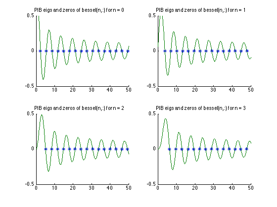
The mesh for the more realistic model that permits quantum tunneling and an object instance that imposes exact boundary conditions and uses axisymmetry explicitly.
dtn_Nrs = [pib_Nrs(1), 2*pib_Nrs(2)]; dtn_Rs = [Rin,Rout]; dtn = DtNBC_axisymm(Nt,dtn_Nrs,dtn_Vs,coords,dtn_Rs);
Picture of potential cross-sections and meshes as a sanity check.
sf = 0.1; % parameter for shifting labels around figure, hold all plot(sf*[0,R,R,Rout + w/2], sf*[0,0,2*V0,2*V0]); % PIB potential (infinite circular box) plot(sf*[0,Rin,Rin,Rout,Rout,Rout+w/2],sf*[0,0,V0,V0,0,0]); % circular wall plot(sf*pib.r,sf*-100,'b.','markersize',10); % mesh for PIB plot(sf*dtn.r,sf*-200,'.','color',[0 0.4 0],'markersize',10); % mesh for other one % label 0, R1 = Rin, R, R2 = Rout set(gca, 'xtick', sf*[0, Rin, R, Rout]); set(gca, 'xticklabel', []); xoff = sf*0.01; xlabely = sf*(-2*V0/3 - 30); text(0 -xoff/2,xlabely,'$0$' ,'interpreter','latex','verticalalignment','top','fontsize',14); text(sf*Rin -2*xoff,xlabely,'$R_1$','interpreter','latex','verticalalignment','top','fontsize',14); text(sf*R -xoff,xlabely,'$R$' ,'interpreter','latex','verticalalignment','top','fontsize',14); text(sf*Rout-xoff,xlabely,'$R_2$','interpreter','latex','verticalalignment','top','fontsize',14); % label 0, V0, and infinity set(gca, 'ytick', sf*[0, V0, 2*V0]); set(gca, 'yticklabel', []); ylabelx = -0.003; text(ylabelx, sf*0, '$0$', 'interpreter', 'latex','horizontalalignment','right','fontsize',14); text(ylabelx, sf*V0, '$V_0$', 'interpreter', 'latex','horizontalalignment','right','fontsize',14); text(ylabelx, sf*2*V0, '$\infty$', 'interpreter', 'latex','horizontalalignment','right','fontsize',14); axis(sf*[0, Rout+w, -2*V0/3, 2*V0 + 50])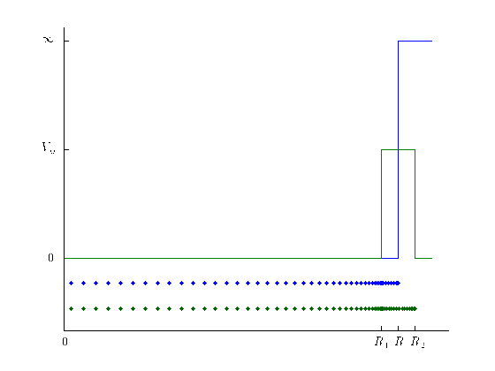
Visual comparison
The axisymmetry assumption allowed us to break down the resonance problem into a sequence of nonlinear eigenvalue problems indexed by integers n. Here are pseudospectral plots for the relevant matrix-valued functions from the more realistic model for n = 0:3. These contour plots suggest the locations of resonances predicted by the realistic model. The resonances predicted by the particle-in-a-box model are plotted on top of the pseudospectral plots.
% Compute the pseudospectral plot over this region with mesh parameters nx % = 500 and ny = 10. r = rect(1,50,-0.5,0.5,500,10); figure, hold on for n = 0:3 j = Nt/2 + n; subplot(4,1,n+1), hold on r.log10contour(@(k) min(svd(dtn.T_fc_j(k,j))),0); plot(real(pib.ks{j}), imag(pib.ks{j}), '*'); r.focus(); title(['n = ' num2str(n)]); box on end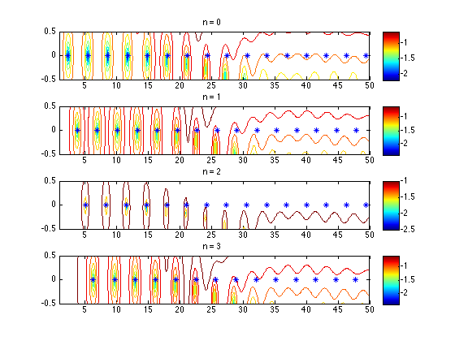
We can see that the square roots k of resonances E predicted by the particle-in-a-box model are decent approximations to the corresponding k values predicted by the realistic model near the origin, but can't capture the imaginary parts of the latter away from the origin. The imaginary parts control resonant wave lifetimes.
Sensitivity analysis for PIB resonances via Schur complement
If we Schur complement away the variables associated to points outside Rin, we get two problems posed on [0,Rin] with induced boundary conditions at Rin. Then we'll do a sensitivity analysis for one of the resonances predicted by the particle-in-a-box model.
Set up schur complement objects to keep track of indices and the complementing process for us.
I1 = 1:pib.Nrs(1); I2 = 1:pib.Nr; I2(I1) = []; pib_sc = schurComp(I1,I2); I2 = 1:dtn.Nr; I2(I1) = []; dtn_sc = schurComp(I1,I2);
Pick a PIB-predicted resonance to focus on.
n = 0;
j = Nt/2 + n;
pib_k = min(pib.ks{j}); % smallest k eigenvalue of n = 0 mode
The n = 0 matrix-valued functions, evaluated at pib_k in each case.
pib.T_fc(pib_k); % evaluate PIB matrix-valued functions at pib_k pibT = pib.T_fc_blks{j}; % grab the one corresponding to n = 0 dtn.T_fc(pib_k); % evaluate realistic model MVFs at pib_k dtnT = dtn.T_fc_blks{j};
Get the -B inv(D) C part of each one--only the bottom right entry of each one will be nonzero, and this entry is part of the induced boundary condition at Rin.
pibT_update = pib_sc.update(pibT); dtnT_update = dtn_sc.update(dtnT); figure, spy(pibT_update) figure, spy(dtnT_update)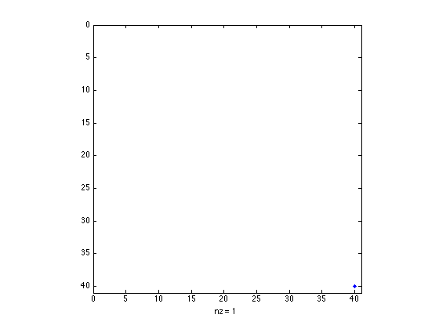
For the curious, here are the nonzero entries of the PIB and realistic model updates due to the Schur complements. The difference between them reflects the difference between the boundary conditions we are imposing at Rin using the Schur complemented problems.
tmp = pibT_update(end,end); fprintf('Nonzero elt of n = 0 PIB MVF update: %f + %fi\n', real(tmp), imag(tmp)); tmp = dtnT_update(end,end); fprintf('Nonzero elt of n = 0 realistic MVF update: %f + %fi\n', real(tmp), imag(tmp)); fprintf('Difference between them: %4.2e\n', abs(pibT_update(end,end) - dtnT_update(end,end)) );
Nonzero elt of n = 0 PIB MVF update: -20.425329 + 0.000000i Nonzero elt of n = 0 realistic MVF update: -20.473579 + 0.152282i Difference between them: 1.60e-01
Take the Schur complements.
pibT_sc = pib_sc.S(pibT); dtnT_sc = dtn_sc.S(dtnT);
Now that we have problems of the same size and meaning, we can do a sensitivity analysis. Let k be a resonance predicted by the realistic model, where k = pib_k + dk. If pib_w, pib_v, pib_k is an eigentriple for the n = 0 PIB matrix-valued function, then dk = -pib_w'*E(k)*pib_v / (pib_w'*T'(k)*pib_v) to first order, where - T is the Schur complement of the matrix-valued function whose eigenvalues give resonances predicted by the realistic model, and - E is the difference between this and the Schur complement of the matrix-valued function whose eigenvalues give resonances predicted by the particle-in-a-box model. See dissertation.
Get pib_w and pib_v.
[V,D,W] = eig(pibT_sc); d = diag(D); [~,idx] = min(abs(d)); % d(idx) is 0, signifying that pibT_sc*pib_v = 0, pib_w'*pibT_sc = 0. fprintf('Error in d(idx) being 0: %4.2e\n', abs(d(idx)) ); pib_v = V(:,idx); pib_w = W(:,idx);
Error in d(idx) being 0: 6.56e-11
Compute T'(pib_k) by differentiating the Schur complement T(k) = A(k) - B(k)*inv(D(k))*C(k).
B11 = dtn.B_fc_blks{j}(dtn_sc.I1,dtn_sc.I1);
A12 = dtn.A_fc_blks{j}(dtn_sc.I1,dtn_sc.I2);
A21 = dtn.A_fc_blks{j}(dtn_sc.I2,dtn_sc.I1);
A22 = dtn.A_fc_blks{j}(dtn_sc.I2,dtn_sc.I2);
B22 = dtn.B_fc_blks{j}(dtn_sc.I2,dtn_sc.I2);
C22 = dtn.C_fc_blks{j}(dtn_sc.I2,dtn_sc.I2);
dtn.dC_fc(pib_k);
dC22 = dtn.dC_fc_blks{j}(dtn_sc.I2,dtn_sc.I2);
M = A22 - pib_k^2*B22 + C22;
dM = -2*pib_k*B22 + dC22;
d_dtnT_sc = -2*pib_k*B11 + A12*(M\dM)*(M\A21); % T'(pib_k)
Do the sensitivity analysis.
E_sc = dtnT_sc - pibT_sc; % E(pib_k)
dk = - (pib_w'*E_sc*pib_v) / (pib_w'*d_dtnT_sc*pib_v)
dk = 2.8823e-04 - 9.1086e-04i
This is pretty small, which suggests that a resonance predicted by the realistic model is nearby. Furthermore, the sensitivity analysis by which dk was produced is one step of a Newton iteration. Alternatively, we can use Newton iteration on a bordered system (see bordered_newton.m for a derivation).
dtn_k = bordered_newton(pib_k, @(k) dtn.T_fc_j(k,j), @(k) dtn.dT_fc_j(k,j)); fprintf('Initial guess: %f + %fi\n', real(pib_k), imag(pib_k)); fprintf('Final iterate: %f + %fi\n', real(dtn_k), imag(dtn_k)); fprintf('Error between them: %4.2e\n', abs(pib_k - dtn_k)); fprintf('Final - initial: %f + %fi\n', real(dtn_k-pib_k), imag(dtn_k-pib_k));
Initial guess: 2.404826 + 0.000000i Final iterate: 2.405120 + -0.000907i Error between them: 9.53e-04 Final - initial: 0.000294 + -0.000907i
Check that switching from pib_k to pib_k + dk, and then to dtn_k, improves the residual at each step.
min(svd(dtn.T_fc_j(pib_k,j))) min(svd(dtn.T_fc_j(dtn_k,j))) min(svd(dtn.T_fc_j(pib_k + dk,j)))
ans = 1.3385e-04 ans = 6.9143e-13 ans = 1.0053e-06
Comparison with rational approximation resonances via pseudospectral localization
The particle-in-a-box resonances are pretty useless away from the origin. If we want to know the far-off resonances for the realistic model, we can replace the DtN map in the exact boundary condition with a rational approximation to the DtN map. We will pick a region where we want to find resonances and make a rational approximation that's good there.
Make rational approximation good on [0,2500]x[-50,50]. This will help us compute resonances for the realistic model that lie in this region. Note that now we're thinking about the resonance energies E, not the square roots k, so we're talking about k values close to [0,50]. Also note that we're going to put down an ellipse that covers this region, since the construction of rational approximations depends on an underlying region with smooth boundary.
ell = ellipse(1250-0.5i,0,1249,50,200,80); % should cover eigs we're looking at in k space rat = ratApproxDtNBC_axisymm(dtn,ell,1); % can do scattering and resonance computations with this
Recall that the axisymmetry assumption allowed us to rewrite the resonance problem as a sequence of nonlinear eigenvalue problems indexed by integer n. The matrix-valued function associated to the n-th NEP involves one component of the DtN map in Fourier space. This is what we replace with a rational approximation. Here's a picture of the error between the DtN map component and the rational approximation we have in rat, for the n = 0 NEP.
n = 0; j = Nt/2 + n; rat.ratf(j).show_error(ell.bb); hold on, ell.draw() title('') % get rid of an automatically generated title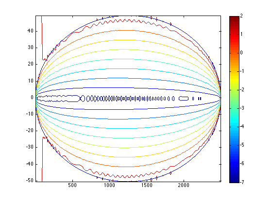
For the curious, here is the error between the n = 0 matrix-valued functions (exact BC vs rational approximation) in the k variable.
r.log10contour(@(k) norm(dtn.T_fc_j(k,j) - rat.T_fc_j(k,j))); t = linspace(0,1,1000); hold on, plot(sqrt(ell.phi(t)),'k','linewidth',3);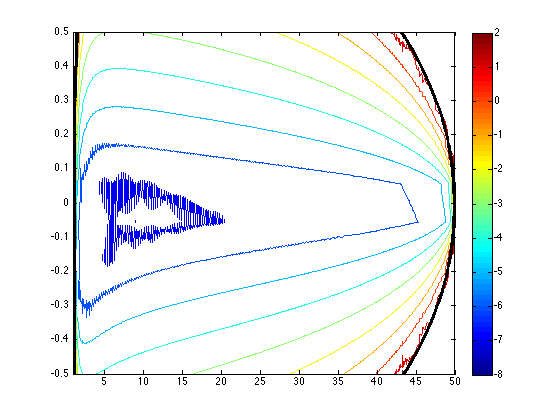
Find estimates for resonances of DtN problem near the real line using rational approximation problem.
rat.eig_comp();
Now let's filter out the eigenvalues we just computed that come from rational approximation (these are spurious and aren't resonance approximations). Let's also overlay with a pseudospectral plot for the matrix-valued function associated to the NEP for n = 0.
maxres = 1e-2; % maximum tolerated residual figure for n = 0:3 j = Nt/2 + n; subplot(4,1,n+1), hold on r.log10contour(@(k) min(svd(dtn.T_fc_j(k,j))), 0, 0); for k = rat.ks{j}( r.contains(rat.ks{j}) ).' if isnan(k) || ~r.contains(k), continue; end res = min(svd(dtn.T_fc_j(k,j))); if res < maxres plot(real(k), imag(k), '*b'); end end title(['n = ' num2str(n)]); end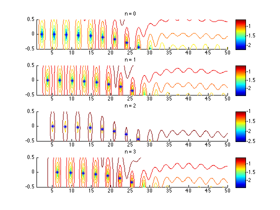
Compare the previous plot with the error between the MVFs from the exact DtN map boundary condition and its rational approximation.
figure for n = 0:3 j = Nt/2 + n; subplot(4,1,n+1), hold on r.log10contour(@(k) norm(dtn.T_fc_j(k,j) - rat.T_fc_j(k,j)), 0, 0); %, [-1,-1]); title(['n = ' num2str(n)]); end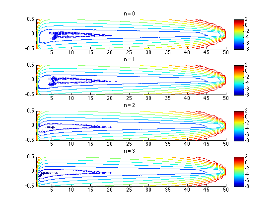
We get pseudospectral localization regions by finding a number such that the pseudospectral contours with that label fit inside the error contours with that same label. For instance, let's look at the components of the 10^{-1} pseudospectrum versus the region where error is less than 10^{-1}.
r = rect(0,50,-1,1,500,20); figure for n = 0:3 j = Nt/2 + n; subplot(4,1,n+1), hold on r.log10contour(@(k) norm(dtn.T_fc_j(k,j) - rat.T_fc_j(k,j)), 0, 0, [-1,-1],'r'); r.log10contour(@(k) min(svd(dtn.T_fc_j(k,j))), 0, 0, [-1,-1],'g'); colorbar('off'); for k = rat.ks{j}( r.contains(rat.ks{j}) ).' if isnan(k) || ~r.contains(k), continue; end res = min(svd(dtn.T_fc_j(k,j))); if res < maxres plot(real(k), imag(k), '*b'); end end title(['n = ' num2str(n)]); end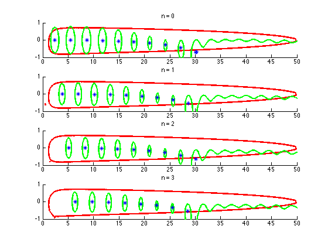
The green components sitting completely inside the red contour contain the same number of resonances predicted by the model using an exact DtN map boundary condition as the predicted by the model using a rational approximation to the DtN map. The latter are plotted, so we know there is one resonance in each of said components.
If we look at the 10^{-1.2} contours instead, the localization regions are a little tighter.
figure c = -1.2; for n = 0:3 j = Nt/2 + n; subplot(4,1,n+1), hold on r.log10contour(@(k) norm(dtn.T_fc_j(k,j) - rat.T_fc_j(k,j)), 0, 0, [c,c],'r'); r.log10contour(@(k) min(svd(dtn.T_fc_j(k,j))), 0, 0, [c,c],'g'); for k = rat.ks{j}( r.contains(rat.ks{j}) ).' if isnan(k) || ~r.contains(k), continue; end res = min(svd(dtn.T_fc_j(k,j))); if res < maxres plot(real(k), imag(k), '.b', 'markersize', 8); end end colorbar('off'); title(['n = ' num2str(n)]); end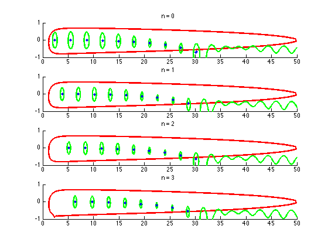
Look for resonances in a region far from the origin
Although the resonances near the origin are the ones observed in real life experiments, maybe someone would want to know about resonances further away. This is quite easy to do in our rational approximation framework, as follows.
r = rect(990,3010,-2000,0,200,200); % look for resonances here ell = ellipse(2000-1000i,0,1500,1500,200,80); % rat approx using this ellipse accurate on r rat = ratApproxDtNBC_axisymm(dtn,ell,1,150); % 150 poles is enough and speeds things up
Compute resonance approximations.
rat.eig_comp();
Check that the error is indeed small on region of interest r, and also plot whatever n = 0 resonance approximations we found using the rational approximation that happen to lie in r.
n = 0; j = Nt/2 + n; rat.ratf(j).show_error(ell.bb,1,1,[-12,-10,-8,-6,-4,-2,0,2]); hold on, r.draw(); hold on, plot(rat.Es{j}(r.contains(rat.Es{j})),'.k','markersize',20) title('');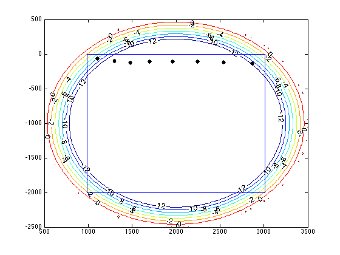
Look at pseudospectrum components that act as localization regions. It turns out that the 10^{-1.8} contours work pretty well.
c = -1.8; rat.ratf(j).show_error(ell.bb, 1, 0, [c c],'r'); hold on, plot(rat.Es{j}(r.contains(rat.Es{j})),'*k','markersize',20) r.log10contour(@(E) min(svd(dtn.T_fc_j( rat.mysqrt(E),j ))), 0, 0, [c c],'g'); title([]);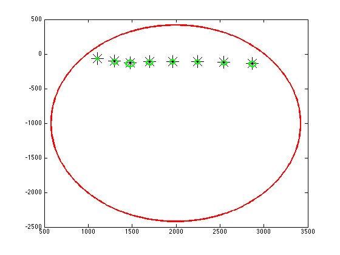
We conclude that each of the green contours contains exactly one resonance predicted by the model using exact boundary conditions.